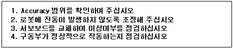
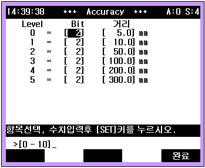
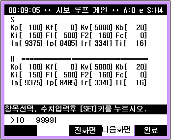

20.1. 개요
서보에 위치지령을 모두 보낸 상태에서 일정 시간동안 대기해도 로봇이 스텝에 기록된 Accuracy 범위 안에 들어오지 않고 있습니다. Accuracy 범위가 너무 작거나 로봇에 진동이 발생하면 발생하는 에러입니다.
20.2. 원인 및 점검방법

1. Accuracy 범위를 확인하여 주십시오
스텝에 기록되어 있는 Accuracy 레벨을 확인하고, 수동모드에서 시스템> 3: 로봇파라미터 > 8: Accuracy 를 선택합니다.

예를 들어 문제가 발생한 스텝의 Accuracy가 0이었다면, Level 0의 Bit와 거리를 작업에서 허용하는 범위 내로 상향 조정해 주십시오.
2. 로봇에 진동이 발생하지 않도록 조정해 주십시오
정지 상태에서 로봇 툴 끝에 잔류 진동이 계속 남아 있으면 Accuracy OK가 안되기 때문에 로봇 툴끝에 진동이 발생하지 않도록 조정해야 합니다.
엔지니어 코드 “R314”를 입력하고 수동모드에서 시스템> 3: 로봇파라미터 > 12: 서보파라미터 설정>1: 서보 루프 게인 을 선택합니다.

로봇 툴 끝에 진동이 발생하면 각축 서보파라미터 중 F1과 F2를 동일한 비율로 전축 동일하게 상향 조정합니다. 예를 들어 상기와 같이 F1=500, F2=160 인 경우 20% 키워주려면 F1=600, F2=192 로 전축을 동일하게 변경합니다.
F1, F2를 키워줄수록 싸이클 타임이 늦어지는 문제가 있습니다만 진동을 억제하기 위해서는 감수해야만 합니다. F1, F2를 전축 동일한 값으로 설정하지 않으면 로봇 툴 끝이 직선궤적이 안나오는 문제가 발생하니 주의해야 합니다.
3. 서보보드를 교체하여 이상여부를 확인하십시오.
서보 보드를 교체한 후 에러가 발생하지 않으면 서보보드의 불량입니다. 서보 보드를 정상품으로 교체하여 주십시오.
4. 구동부가 정상적으로 작동하는지 확인하십시오.
해당축의 구동부(모터, 감속기)가 정상적으로 작동하는지 확인하십시오.